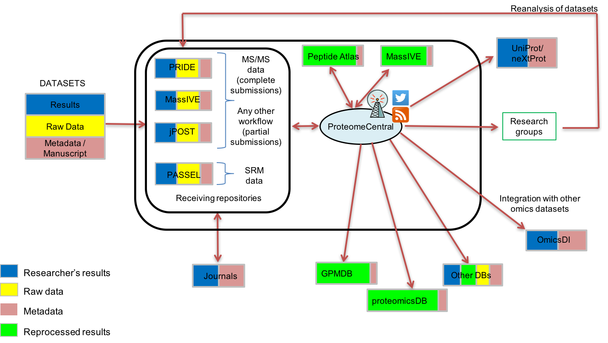

Mission
The ProteomeXchange Consortium has been set up to provide a globally coordinated submission of mass spectrometry proteomics data to the main existing proteomics repositories, and to encourage optimal data dissemination. Please review our Data Submission Guidelines and PX Membership Agreement. See also the summary Nature Biotechnology paper published in 2014.

Public Data
Public PXD datasets can be browsed over at ProteomeCentral. An RSS feed is also available.
Data Submission
ProteomeXchange fully supports both MS/MS proteomics and SRM data submission. Submissions of other types of proteomics data is also possible using the Partial Submission mechanism.
Member repositories
The founding members of ProteomeXchange are PRIDE , the PRoteomics IDEntifications Database at the European Bioinformatics Institute, based in Hinxton, UK and PeptideAtlas, part of the Institute of Systems Biology in Seattle, USA. Since the launch MassIVE has joined as well. The latest addition to ProteomeXchange is jPost.
How to Cite ProteomeXchange
Vizcaíno JA, Deutsch EW, Wang R, Csordas A, Reisinger F, Ríos D, Dianes JA, Sun Z, Farrah T, Bandeira N, Binz PA, Xenarios I, Eisenacher M, Mayer G, Gatto L, Campos A, Chalkley RJ, Kraus HJ, Albar JP, Martinez-Bartolomé S, Apweiler R, Omenn GS, Martens L, Jones AR, Hermjakob H (2014). ProteomeXchange provides globally co-ordinated proteomics data submission and dissemination. Nat Biotechnol 32(3): 223-226 (PubMed ID: 24727771) (PDF Paper) (EUROPMC:24727771)